Abstract
Despite the popularity of guitar effects, there is very little existing research on classification and parameter estimation of specific plugins or effect units from guitar recordings. In this paper, convolutional neural networks were used for classification and parameter estimation for 13 overdrive, distortion and fuzz guitar effects. A novel dataset of processed electric guitar samples was assembled, with four sub-datasets consisting of monophonic or polyphonic samples and discrete or continuous settings values, for a total of about 250 hours of processed samples. Results were compared for networks trained and tested on the same or on a different sub-dataset. We found that discrete datasets could lead to equally high performance as continuous ones, whilst being easier to design, analyse and modify. Classification accuracy was above 80\%, with confusion matrices reflecting similarities in the effects timbre and circuits design. With parameter values between 0.0 and 1.0, the mean absolute error is in most cases below 0.05, while the root mean square error is below 0.1 in all cases but one.
Dataset
To assemble our dataset we selected 13 overdrive, distortion and fuzz plug-ins designed to emulate some of the most iconic and widely used analogue guitar effect pedals. All the plugins have 2 or 3 controls and, regardless of the specific name adopted by the designer, the controls can be identified by their processing function: Level, Gain, Tone/Equalisation. For training and testing purposes, 4 sub-datasets were generated: Mono Discrete , Mono Continuous, Poly Discrete and Poly Continuous.
| Designer | Plugin | Emulation of | Id |
|---|---|---|---|
| Audified | MultiDrive Pedal Pro | Ibanez TS808 | 808 |
| Ibanez TS9 | TS9 | ||
| Boss BD2 | BD2 | ||
| Boss OD1 | OD1 | ||
| Boss SD1 | SD1 | ||
| Boss DS1 | DS1 | ||
| ProCo Rat | RAT | ||
| MXR Distortion+ | DPL | ||
| Arbiter Fuzz Face | FFC | ||
| Electro-Harmonix Big Muff | BMF | ||
| Mercuriall | Greed Smasher | Mesa/Boogie Grid Slammer | MGS |
| Analog Obsession | Pig Pie | Electro-Harmonix Russian Big Muff | RBM |
| Zupaa | Vox Tone Bender | VTB |
The first two subsets (Mono Discrete, Poly Discrete) use a discrete set of combinations selected as the most common and representative settings a person might use: Gain = [0.0, 0.1, 0.2, 0.5, 0.8, 1.0], Tone/Eq = [0.0, 0.2, 0.5, 0.8, 1.0]. Also, since the Level control has no effect on the output timbre it was set to 1.0 for every combination. For the second two subsets (Mono Continuous, Poly Continuous), both unprocessed samples as well as settings' values were drawn from a uniform distribution.
| Id | Level | Gain | Tone/Eq |
|---|---|---|---|
| 808 | [1.0] | [0.2, 0.5, 0.8, 1.0] | [0.0, 0.2, 0.5, 0.8, 1.0] |
| TS9 | [1.0] | [0.2, 0.5, 0.8, 1.0] | [0.0, 0.2, 0.5, 0.8, 1.0] |
| BD2 | [1.0] | [0.2, 0.5, 0.8, 1.0] | [0.0, 0.2, 0.5, 0.8, 1.0] |
| OD1 | [1.0] | [0.2, 0.5, 0.8, 1.0] | --- |
| SD1 | [1.0] | [0.2, 0.5, 0.8, 1.0] | [0.0, 0.2, 0.5, 0.8, 1.0] |
| DS1 | [1.0] | [0.2, 0.5, 0.8, 1.0] | [0.0, 0.2, 0.5, 0.8, 1.0] |
| RAT | [1.0] | [0.2, 0.5, 0.8, 1.0] | [0.0, 0.2, 0.5, 0.8, 1.0] |
| DPL | [1.0] | [0.2, 0.5, 0.8, 1.0] | --- |
| FFC | [1.0] | [0.0, 0.2, 0.5, 0.8, 1.0] | --- |
| BMF | [1.0] | [0.2, 0.5, 0.8, 1.0] | [0.0, 0.2, 0.5, 0.8, 1.0] |
| MGS | [1.0] | [0.2, 0.5, 0.8, 1.0] | [0.0, 0.2, 0.5, 0.8, 1.0] |
| RBM | [1.0] | [0.2, 0.5, 0.8, 1.0] | [0.0, 0.2, 0.5, 0.8, 1.0] |
| VTB | [1.0] | [0.1, 0.2, 0.5, 0.8, 1.0] | --- |
Architecture
The classification (FxNet) and estimation (SetNetCond) networks are both based on 2 convolutional and 3 fully connected layers, with batch normalisation layers at each hidden level. SetNetCond is conditioned on the effect class to improve the settings estimation. In this way, once the plugin is identified by FxNet, we can pass the information to SetNetCond. FxNet is trained with cross-entropy loss while SetNetCond with Mean Square Error
| Layer | Size | #Fmaps | Activation |
|---|---|---|---|
| Conv 2D | 5x5 | 6 | Linear |
| Batch Norm | - | - | - |
| Activation | - | - | ReLU |
| Max Pool | 2x2 | - | - |
| Conv 2D | 5x5 | 12 | Linear |
| Batch Norm | - | - | - |
| Activation | - | - | ReLU |
| Max Pool | 2x2 | - | - |
| Fully Connected | 120 | - | Linear |
| Batch Norm | - | - | - |
| Activation | - | - | ReLU |
| Fully Connected | 60 | - | Linear |
| Batch Norm | - | - | - |
| Activation | - | - | ReLU |
| Fully Connected | (1) | - | (2) |
Trainable Parameters: FxNet = ∼760k; SetNetCond = ∼1.5M
(1) FxNet = #Plug-ins - SetNet = #Settings
(2) FxNet = Linear - SetNet = Tanh
Results: Classification
FxNet accuracy (%)
|
Test
Train
|
Mono Disc. | Mono Cont. | Poly Disc. | Poly Cont. |
|---|---|---|---|---|
| Mono Disc. | 86.3 | 83.1 | --- | --- |
| Mono Cont. | 81.3 | 90.9 | --- | --- |
| Poly Disc. | --- | --- | 88.4 | 89.4 |
| Poly Cont. | --- | --- | 84.1 | 91.4 |
Confusion matrix for all training/testing conditions on the 4 datasets.
Mono datasets:
Poly datasets:
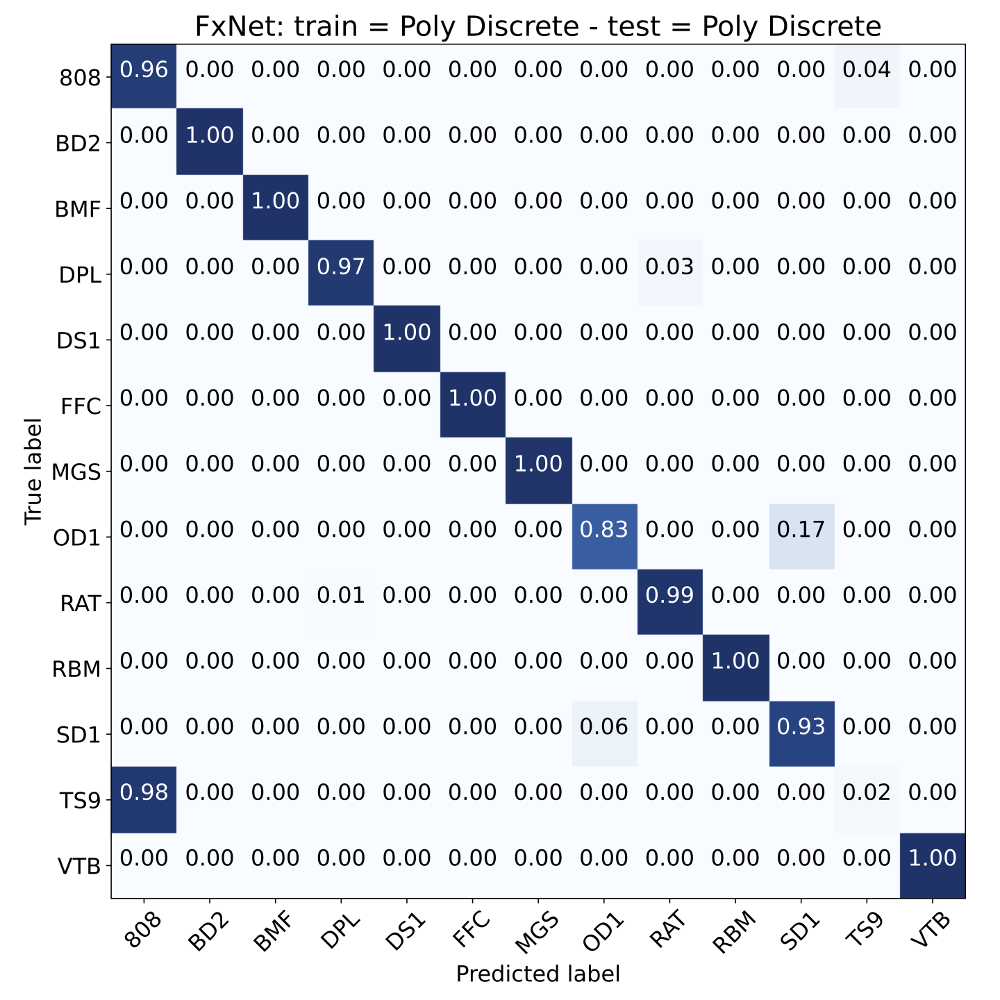808 and TS9 are very similar and cause a lot of misclassifications. Retraining the model without TS9 samples, the accuracy improves sensibly. The 808 is not misclassified anymore and also other plugins are better classified.
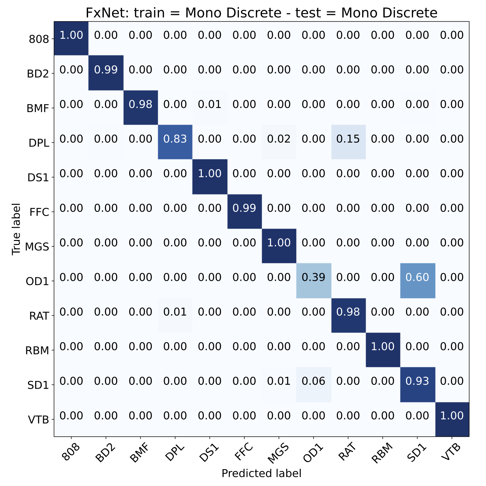
Results: Estimation
SetNetCond errors
| Train set | Gain MAE (RMSE) |
Tone/Eq MAE (RMSE) |
Test set |
|---|---|---|---|
| Mono Disc. | 0.030 (0.061) | 0.039 (0.070) | Mono Disc. |
| 0.064 (0.084) | 0.044 (0.080) | Mono Cont. | |
| Mono Cont. | 0.062 (0.096) | 0.067 (0.108) | Mono Disc. |
| 0.033 (0.045) | 0.039 (0.072) | Mono Cont. | |
| Poly Disc. | 0.017 (0.033) | 0.024 (0.047) | Poly Disc. |
| 0.055 (0.070) | 0.038 (0.062) | Poly Cont. | |
| Poly Cont. | 0.036 (0.063) | 0.036 (0.062) | Poly Disc. |
| 0.020 (0.028) | 0.019 (0.034) | Poly Cont. | |
| Avg | 0.040 (0.060) | 0.038 (0.066) |
Boxplots for all training/testing conditions on the 4 datasets (whiskers extend to 1.5 the interquartile range).
Mono datasets:
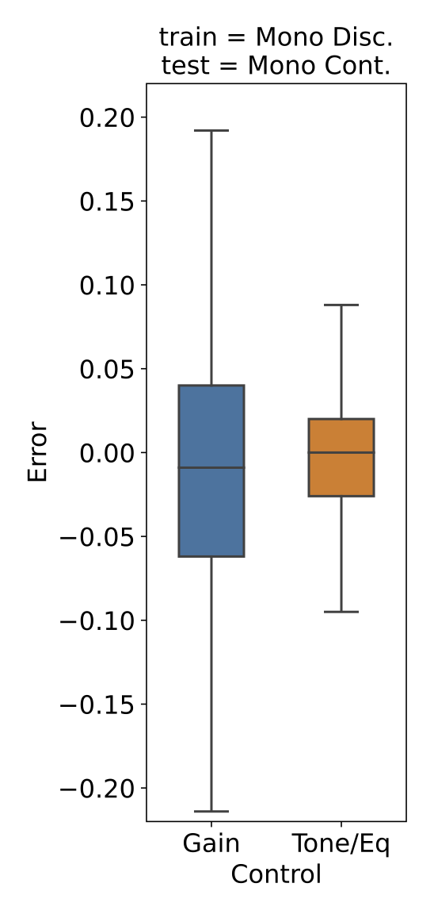Poly datasets:

Scatterplots for all training/testing conditions on the 4 datasets.
Mono datasets:
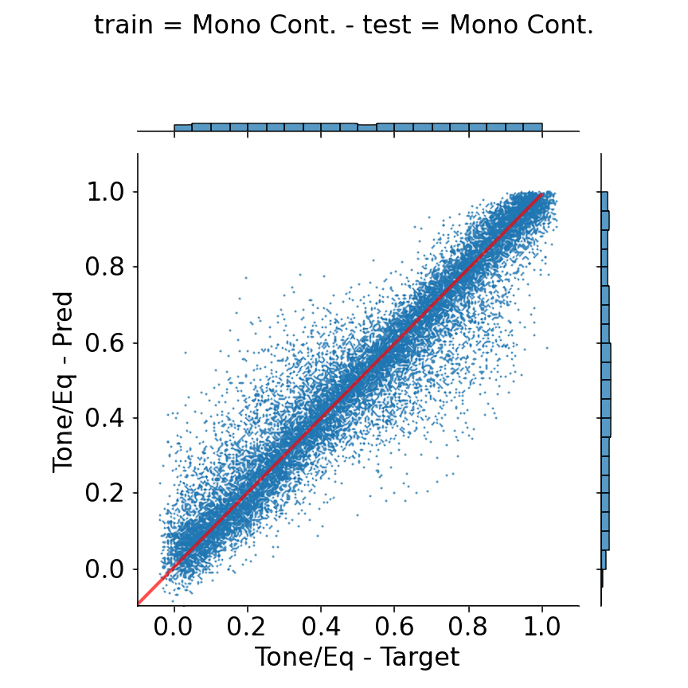 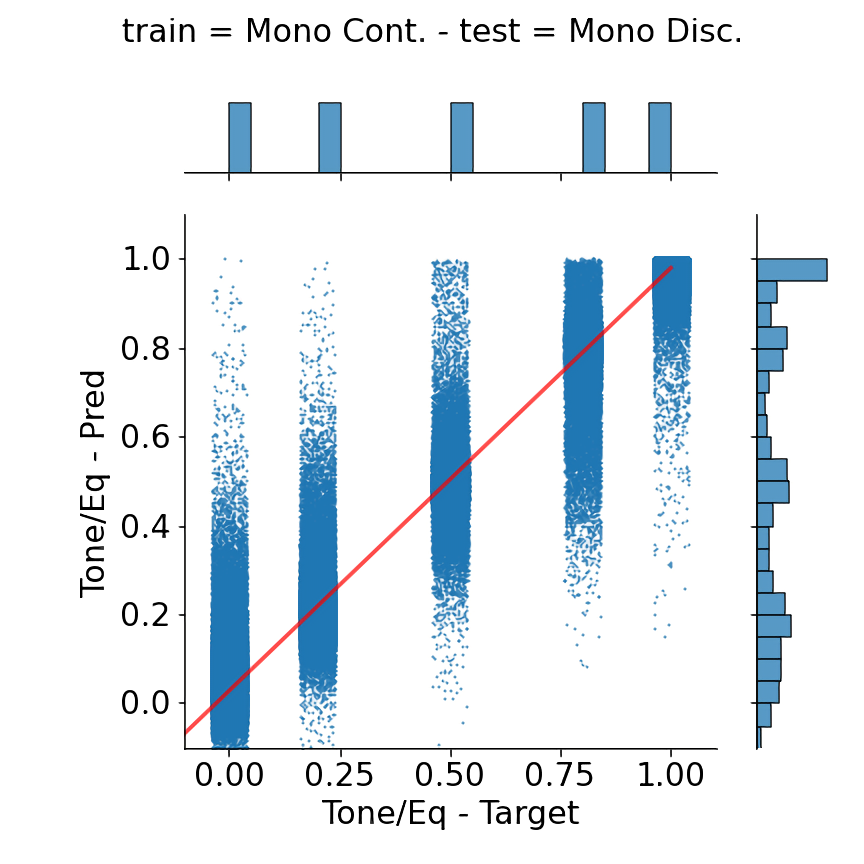
Poly datasets:
Mean error and skew for all training/testing conditions on the 4 datasets.
Mono datasets:

Poly datasets:
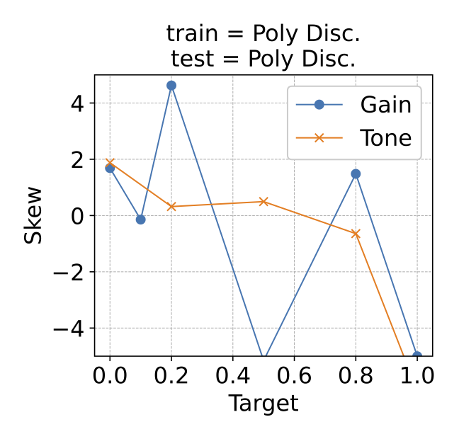 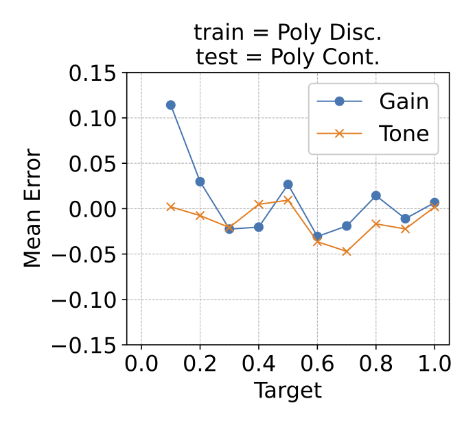
 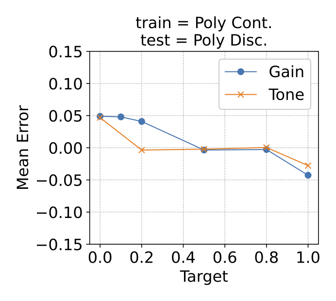
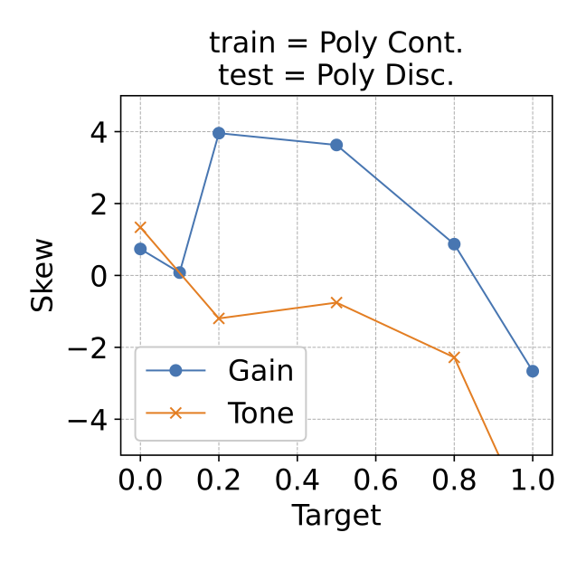
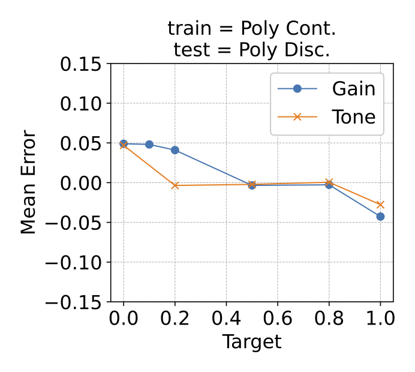
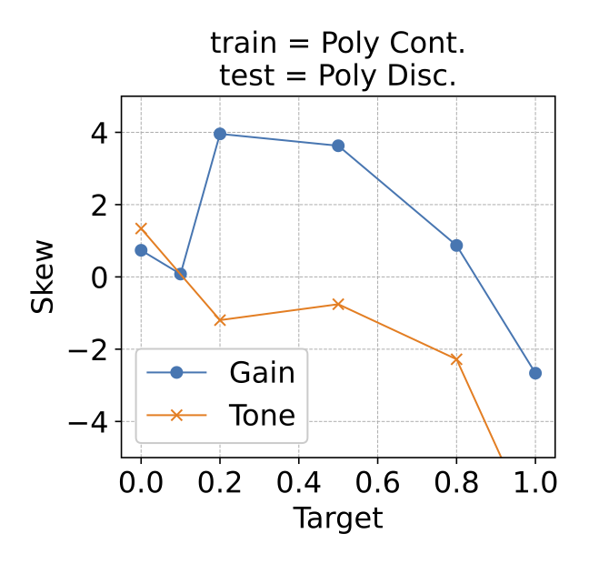
Results: Listening Test
To analyse the misclassifications reported in the confusion matrices we used an AXY test. The test compared 808 vs TS9, OD1 vs SD1 and DPL vs RAT. In many cases, samples from these effects are misclassified. We wanted to understand whether listeners (8 in total) would incur in similar challenges trying to distinguish them. If the reference cannot be identified reliably with a low p-value (<0.05), then the null hypothesis cannot be rejected and it cannot be proven that there is a perceptible difference between X and Y. 10 conditions compared the plugins of interest, while another 5 conditions where used to check that participants could reliably distinguish between samples with clear perceivable differences.
808 vs TS9
In 9 out of 10 cases the participants could not reliably distinguish between X and Y (p >0.05). Regardless of the settings, the two effects seem to be indistinguishable.
| A | X | Y | 1-sided p-value |
|---|---|---|---|
| G61-61311-808-O5T8-20630 | G61-61311-808-O5T8-20630 | G61-61311-TS9-D5T8-20630 | 0.6367 |
| G73-50205-808-O5T5-20845 | G73-50205-BMF-S5T5-20845 | G73-50205-808-O5T5-20845 | 0.0039 |
| G91-73609-808-O8T10-21135 | G91-73609-808-O8T10-21135 | G91-73609-TS9-O8T10-21135 | 0.1445 |
| G63-48108-808-O2T8-20679 | G63-48108-TS9-O2T8-20679 | G63-48108-808-O2T8-20679 | 0.3633 |
| G73-60405-808-O5T10-20871 | G73-60405-808-O5T10-20871 | G73-60405-TS9-O5T10-20871 | 0.0352 |
| G83-49109-808-O10T10-20992 | G83-49109-RAT-D10T10-20992 | G83-49109-808-O10T10-20992 | 0.0039 |
| G61-49109-808-O5T0-20602 | G61-49109-808-O5T0-20602 | G61-49109-TS9-O5T0-20602 | 0.1445 |
| G91-51206-808-O10T0-21080 | G91-51206-808-O10T0-21080 | G91-51206-TS9-O10T0-21080 | 0.3633 |
| G71-48203-808-O10T2-20765 | G71-48203-BMF-S10T2-20765 | G71-48203-808-O10T2-20765 | 0.0039 |
| G83-60310-808-O10T2-21019 | G83-60310-TS9-D10T2-21019 | G83-60310-808-O10T2-21019 | 0.3633 |
| G93-69605-808-O8T2-21209 | G93-69605-RAT-D8T2-21209 | G93-69605-808-O8T2-21209 | 0.0039 |
| G93-56306-TS9-D2T10-21171 | G93-56306-TS9-D2T10-21171 | G93-56306-808-O2T10-21171 | 0.1445 |
| G71-55305-808-O8T5-20780 | G71-55305-808-O8T5-20780 | G71-55305-TS9-D8T5-20780 | 0.1445 |
| G63-60405-808-O2T2-20715 | G63-60405-808-O2T2-20715 | G63-60405-BD2-G2T2-20715 | 0.0039 |
| G91-57402-808-O10T10-21102 | G91-57402-808-O10T10-21102 | G91-57402-TS9-O10T10-21102 | 0.6367 |
OD1 vs SD1
In 9 out of 10 cases the participants could not reliably distinguish between X and Y (p >0.05). For Gain set to 0.2 or 0.5 the two effects seem to be indistinguishable.
| A | X | Y | 1-sided p-value |
|---|---|---|---|
| G81-47202-OD1-D2-20920 | G81-47202-SD1-D2T5-20920 | G81-47202-OD1-D2-20920 | 0.1445 |
| G91-44104-OD1-D5-21065 | G91-44104-OD1-D5-21065 | G91-44104-DPL-D5-21065 | 0.0039 |
| G63-55400-OD1-D5-20710 | G63-55400-MGS-D5-20710 | G63-55400-OD1-D5-20710 | 0.0039 |
| G91-59404-OD1-D2-21104 | G91-59404-RAT-D2F5-21104 | G91-59404-OD1-D2-21104 | 0.0039 |
| G73-60405-OD1-D5-20871 | G73-60405-SD1-D5T5-20871 | G73-60405-OD1-D5-20871 | 0.1445 |
| G83-52207-OD1-D2-21003 | G83-52207-RAT-D2F5-21003 | G83-52207-OD1-D2-21003 | 0.0039 |
| G81-65506-OD1-D5-20963 | G81-65506-OD1-D5-20963 | G81-65506-SD1-D5T2-20963 | 0.6367 |
| G81-51206-OD1-D2-20924 | G81-51206-DPL-D2-20924 | G81-51206-OD1-D2-20924 | 0.0039 |
| G81-59500-OD1-D2-20957 | G81-59500-OD1-D2-20957 | G81-59500-SD1-D2T5-20957 | 0.3633 |
| G93-48203-OD1-D2-21155 | G93-48203-SD1-D2T2-21155 | G93-48203-OD1-D2-21155 | 0.1445 |
| G73-46201-OD1-D2-20841 | G73-46201-OD1-D2-20841 | G73-46201-SD1-D2T5-20841 | 0.3633 |
| G63-69510-OD1-D5-20733 | G63-69510-SD1-D5T2-20733 | G63-69510-OD1-D5-20733 | 0.3633 |
| G63-65506-OD1-D5-20729 | G63-65506-SD1-D5T5-20729 | G63-65506-OD1-D5-20729 | 0.3633 |
| G63-60310-OD1-D2-20707 | G63-60310-SD1-D2T2-20707 | G63-60310-OD1-D2-20707 | 0.3633 |
| G81-65410-OD1-D5-20954 | G81-65410-OD1-D5-20954 | G81-65410-SD1-D5T5-20954 | 0.0352 |
DPL vs RAT
In 5 out of 10 cases the participants could not reliably distinguish between X and Y (p >0.05). In some cases, the DPL with Gain set to 1.0 seems to be indistinguishable from the RAT with Gain set to 0.5.
| A | X | Y | 1-sided p-value |
|---|---|---|---|
| G63-61406-DPL-D10-20716 | G63-61406-DPL-D10-20716 | G63-61406-RBM-T10S10-20716 | 0.0039 |
| G63-65601-DPL-D10-20737 | G63-65601-DPL-D10-20737 | G63-65601-RAT-D2F0-20737 | 0.0352 |
| G63-50205-DPL-D10-20689 | G63-50205-RBM-D10-20689 | G63-50205-DPL-D10-20689 | 0.0039 |
| G91-67603-DPL-D10-21129 | G91-67603-DPL-D10-21129 | G91-67603-808-D10T10-21129 | 0.0039 |
| G73-52207-DPL-D10-20847 | G73-52207-808-D10-20847 | G73-52207-DPL-D10-20847 | 0.0039 |
| G93-57307-DPL-D10-21172 | G93-57307-DPL-D10-21172 | G93-57307-RBM-T8S10-21172 | 0.0039 |
| G91-55400-DPL-D10-21100 | G91-55400-DPL-D10-21100 | G91-55400-RAT-D5F0-21100 | 0.0352 |
| G91-61502-DPL-D10-21115 | G91-61502-RAT-D5F0-21115 | G91-61502-DPL-D10-21115 | 0.1445 |
| G63-50300-DPL-D10-20697 | G63-50300-RAT-D5F0-20697 | G63-50300-DPL-D10-20697 | 0.1445 |
| G73-68604-DPL-D10-20896 | G73-68604-RAT-D2F0-20896 | G73-68604-DPL-D10-20896 | 0.0039 |
| G61-50110-DPL-D10-20603 | G61-50110-RAT-D5F0-20603 | G61-50110-DPL-D10-20603 | 0.1445 |
| G93-76612-DPL-D10-21216 | G93-76612-DPL-D10-21216 | G93-76612-RAT-D5F0-21216 | 0.1445 |
| G61-65506-DPL-D10-20651 | G61-65506-RAT-D5F0-20651 | G61-65506-DPL-D10-20651 | 0.0039 |
| G71-64409-DPL-D10-20797 | G71-64409-DPL-D10-20797 | G71-64409-RAT-D5F0-20797 | 0.6367 |
| G61-61406-DPL-D10-20638 | G61-61406-DPL-D10-20638 | G61-61406-RAT-D5F0-20638 | 0.0039 |
Citation
@article{comunita2020guitar,
title={Guitar Effects Recognition and Parameter Estimation with Convolutional Neural Networks},
author={Comunit{\`a}, Marco and Stowell, Dan and Reiss, Joshua D},
journal={arXiv preprint arXiv:2012.03216},
year={2020}}